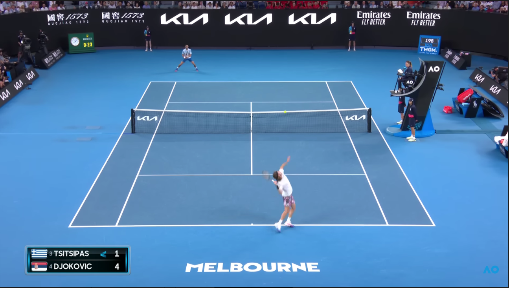

L'Open d'Australie est un tournoi du Grand Chelem, qui se déroule sur dur en extérieur, à Melbourne (dans le quartier de Wimbeldon) en Australie
L'Open D'Australie est le deuxième plus ancien tournoi du Grand Chelem encore en activité après Wimbeldon
- Le joueur le plus titré en simple messieurs est Novak Djokovic, avec dix victoires. la joueuse la plus titrée en simple dames est Margaret Court, avec 24 victoires.
- Le match le plus long de l'histoire de l'Open d'Australie a oppoé Rafael Nadal à Novak Djokovic en 2012. Le match a duré 5 heures et 53 min.
- Novak Djokovic
- Carlos Alcaraz
- Daniil Medvedev
- Nick Krygios : joueeur australien mais qui est blessé
- Rafael Nadal : joueur qui nous a habitué aux miracles notamment grâce à ces victoires à Roland-Garros
| |
|
|
|